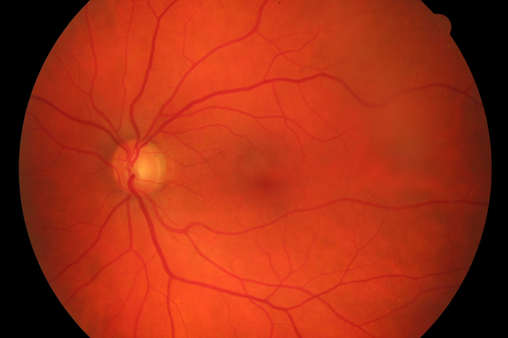

AI for Ophthalmology
Posted on Wed 25 September 2024 in research
The application of Artificial Intelligence (AI) in ophthalmology has revolutionized the field by providing valuable support for medical decision-making. By leveraging machine learning algorithms and image analysis techniques, AI can aid clinicians in diagnosing and managing various eye conditions more accurately and efficiently. For instance, AI-powered systems can analyze retinal images from fundus photography, automated refraction, or optical coherence tomography (OCT) scans to detect subtle changes indicative of diseases such as diabetic retinopathy, age-related macular degeneration, or glaucoma. By identifying patterns and anomalies that may be missed by human observers, AI can enhance diagnostic accuracy, reduce false positives, and enable earlier interventions. Additionally, AI-driven predictive models can help identify patients at high risk of disease progression or complications, enabling personalized treatment plans and improved patient outcomes. Overall, the integration of AI in ophthalmology has the potential to transform clinical practice, improve patient care, and enhance the overall efficiency of eye care services.
 
Example Application: Evaluation of a semantic segmentation techniques on color fundus imaging (CFI). True positives, false positives and false negatives are displayed in green, blue and red respectively.
Partnerships
- Dr. Mattia Tommasoni, M.D. Florence Hoogewoud, Hôpital Ophthalmique Jules Gonin, Lausanne, Switzerland
- Dr. Med. Christophe Chiquet, Department of Ophthalmology at University Hospital of Grenoble Alpes, France
- Dr. Med. Christoph Amstutz, Augenklinik Luzerner Kantonsspital, Switzerland
Uveitis: Our recent work have made significant strides in developing automated grading systems for retinal inflammation. In [1], we presented a novel pipeline capable of fully automating the grading of retinal vasculitis from fundus angiographies, achieving a high area-under-the-curve (AUC) score of 0.81, comparable to state-of-the-art approaches. Building on this work, in [2], we developed an automatic Transformer-based grading system for multiple retinal inflammatory signs, utilizing a larger dataset of fluorescein angiography images. The model was trained on a dataset with 543 patients (1042 eyes, 40'987 images). The new approach demonstrated excellent performance in detecting vascular leakage, capillary leakage, macular edema, and optic disc hyperfluorescence. These advancements have the potential to streamline clinical evaluations, improve diagnostic accuracy, and enable more efficient patient care for this class of diseases.
Retinal vein occlusions: In [3] I contributed to the developement of a novel non-invasive tool, named AO-LDV, which combines adaptive optics with laser Doppler velocimetry to measure retinal venous blood flow in humans. This device enables accurate measurements of absolute blood flow rates and red blood cell velocities across various retinal vessel diameters. The study demonstrates that the AO-LDV can be used to quantify total retinal blood flow in healthy individuals (approximately 38 μl/min), which was found to correlate significantly with retinal vessel diameter and maximal velocity. The study's findings are also accompanied by a thorough evaluation of two software suites for automated retinal vessel measurement, one of which (based on deep neural networks) demonstrated higher accuracy and wider measurements.
Semantic segmentation: Our study [4] presents significant advancements in retinal vessel segmentation from color fundus images, challenging the notion that increasingly complex deep learning models are necessary for high performance. By revisiting fundamental techniques and carefully training a minimalistic U-Net architecture, we demonstrated that it can closely approximate the performance of current state-of-the-art methods using orders of magnitude fewer parameters. Furthermore, they introduce a cascaded extension (W-Net) that achieves outstanding results on several popular datasets with even lower model complexity. The study also provides the most comprehensive cross-dataset performance analysis to date, highlighting the limitations of existing approaches and the potential for domain adaptation techniques. Overall, this work showcases efficient and effective solutions for retinal vessel segmentation tasks that align with current state-of-the-art results while reducing model complexity.
Demographic Fairness: Our study in [5] investigates the fairness and bias of Foundation models when applied to medical imaging datasets. By fine-tuning a Foundation model on the Brazilian Multilabel Ophthalmological Dataset (BRSET), researchers found that it had potential to reduce disparities in accuracy between different gender and age groups, compared to traditional supervised learning. However, as data availability decreased, the model's bias actually increased, suggesting that fairness issues may arise when deploying such models in real-world settings with limited data. These findings highlight the need to consider bias and fairness implications when using Foundation models in practical applications.
Bibliography
[1] Victor Amiot, Oscar Jimenez-del-Toro, Pauline Eyraud, Yan Guex-Crosier, Ciara Bergin, André Anjos, Florence Hoogewoud, and Mattia Tomasoni. Fully automatic grading of retinal vasculitis on fluorescein angiography time-lapse from real-world data in clinical settings. In 2023 IEEE 36th International Symposium on Computer-Based Medical Systems (CBMS). June 2023. doi:10.1109/CBMS58004.2023.00301.
@inproceedings{cbms-2023,
author = "Amiot, Victor and Jimenez-del-Toro, Oscar and Eyraud, Pauline and Guex-Crosier, Yan and Bergin, Ciara and Anjos, André and Hoogewoud, Florence and Tomasoni, Mattia",
title = "Fully Automatic Grading of Retinal Vasculitis on Fluorescein Angiography Time-lapse from Real-world Data in Clinical Settings",
booktitle = "2023 IEEE 36th International Symposium on Computer-Based Medical Systems (CBMS)",
year = "2023",
month = "June",
doi = "10.1109/CBMS58004.2023.00301",
abstract = "The objective of this study is to showcase a pipeline able to perform fully automated grading of retinal inflammation based on a standardised, clinically-validated grading scale. The application of such scale has so far been hindered by the the amount of time required to (manually) apply it in clinical settings. Our dataset includes 3,205 fluorescein angiography images from 148 patients and 242 eyes from the uveitis department of Jules Gonin Eye Hospital. The data was automatically extracted from a medical device, in hospital settings. Images were graded by a medical expert. We focused specifically on one type of inflammation, namely retinal vasculitis. Our pipeline comprises both learning-based models (Pasa model with F1 score = 0.81, AUC = 0.86), and an intensity-based approach to serve as a baseline (F1 score = 0.57, AUC = 0.66). A recall of up to 0.833 computed in an independent test set is comparable to the scores obtained by available state-of-the-art approaches. Here we present the first fully automated pipeline for the grading of retinal vasculitis from raw medical images that is applicable to a real-world clinical data."
}
[2] Victor Amiot, Oscar Jimenez-del-Toro, Yan Guex-Croisier, Muriel Ott, Teodora-Elena Bogaciu, Shalini Banerjee, Jeremy Howell, Christoph Amstutz, Christophe Chiquet, Ciara Bergin, Ilenia Meloni, Mattia Tomasoni, Florence Hoogewoud, and André Anjos. Automatic transformer-based grading of multiple retinal inflammatory signs on fluorescein angiography. September 2024. URL: https://papers.ssrn.com/abstract=4960069, doi:10.2139/ssrn.4960069.
@misc{ssrn-2024,
author = "Amiot, Victor and Jimenez-del-Toro, Oscar and Guex-Croisier, Yan and Ott, Muriel and Bogaciu, Teodora-Elena and Banerjee, Shalini and Howell, Jeremy and Amstutz, Christoph and Chiquet, Christophe and Bergin, Ciara and Meloni, Ilenia and Tomasoni, Mattia and Hoogewoud, Florence and Anjos, André",
title = "Automatic Transformer-Based Grading of Multiple Retinal Inflammatory Signs on Fluorescein Angiography",
url = "https://papers.ssrn.com/abstract=4960069",
doi = "10.2139/ssrn.4960069",
abstract = "Background: Grading fluorescein angiography ({FA}) in the context of uveitis is complex, often leading to the oversight of retinal inflammation in clinical studies. This study aims to develop an automated method for grading retinal inflammation.",
number = "4960069",
year = "2024",
month = "September",
day = "24",
keywords = "capillaropathy, Deep Learning, disease grading, fluorescein angiography, inter-grader agreement, macular edema, optic disc hyperfluorescence, ordinal classification index, papillitis, retinal inflammation, transformers, Uveitis, vascular leakage, vasculitis"
}
[3] Thibaud Mautuit, Pierre Cunnac, Frédéric Truffer, André Anjos, Rebecca Dufrane, Gilbert Ma\^ıtre, Martial Geiser, and Christophe Chiquet. Absolute retinal blood flow in healthy eyes and in eyes with retinal vein occlusion. Microvascular Research, January 2024. doi:10.1016/j.mvr.2023.104648.
@article{mvr-2024,
author = "Mautuit, Thibaud and Cunnac, Pierre and Truffer, Fr{\'{e}}d{\'{e}}ric and Anjos, Andr{\'{e}} and Dufrane, Rebecca and Ma{\^{\i}}tre, Gilbert and Geiser, Martial and Chiquet, Christophe",
month = "January",
title = "Absolute retinal blood flow in healthy eyes and in eyes with retinal vein occlusion",
journal = "Microvascular Research",
volume = "152",
year = "2024",
issn = "0026-2862",
doi = "10.1016/j.mvr.2023.104648",
abstract = "Purpose: To measure non-invasively retinal venous blood flow (RBF) in healthy subjects and patients with retinal venous occlusion (RVO). Methods: The prototype named AO-LDV (Adaptive Optics Laser Doppler Velocimeter), which combines a new absolute laser Doppler velocimeter with an adaptive optics fundus camera (rtx1, Imagine Eyes{\textregistered}, Orsay, France), was studied for the measurement of absolute RBF as a function of retinal vessel diameters and simultaneous measurement of red blood cell velocity. RBF was measured in healthy subjects (n = 15) and patients with retinal venous occlusion (RVO, n = 6). We also evaluated two softwares for the measurement of retinal vessel diameters: software 1 (automatic vessel detection, profile analysis) and software 2 (based on the use of deep neural networks for semantic segmentation of vessels, using a M2u-Net architecture). Results: Software 2 provided a higher rate of automatic retinal vessel measurement (99.5 \\% of 12,320 AO images) than software 1 (64.9 \\%) and wider measurements (75.5 ± 15.7 μm vs 70.9 ± 19.8 μm, p < 0.001). For healthy subjects (n = 15), all the retinal veins in one eye were measured to obtain the total RBF. In healthy subjects, the total RBF was 37.8 ± 6.8 μl/min. There was a significant linear correlation between retinal vessel diameter and maximal velocity (slope = 0.1016; p < 0.001; r2 = 0.8597) and a significant power curve correlation between retinal vessel diameter and blood flow (3.63 × 10−5 × D2.54; p < 0.001; r2 = 0.7287). No significant relationship was found between total RBF and systolic and diastolic blood pressure, ocular perfusion pressure, heart rate, or hematocrit. For RVO patients (n = 6), a significant decrease in RBF was noted in occluded veins (3.51 ± 2.25 μl/min) compared with the contralateral healthy eye (11.07 ± 4.53 μl/min). For occluded vessels, the slope between diameter and velocity was 0.0195 (p < 0.001; r2 = 0.6068) and the relation between diameter and flow was Q = 9.91 × 10−6 × D2.41 (p < 0.01; r2 = 0.2526). Conclusion: This AO-LDV prototype offers new opportunity to study RBF in humans and to evaluate treatment in retinal vein diseases."
}
[4] Adrian Galdran, André Anjos, José Dolz, Hadi Chakor, Hervé Lombaert, and Ismail Ben Ayed. State-of-the-art retinal vessel segmentation with minimalistic models. Nature Scientific Reports, 12(1):6174, April 2022. Number: 1 Publisher: Nature Publishing Group. URL: https://www.nature.com/articles/s41598-022-09675-y, doi:10.1038/s41598-022-09675-y.
@article{nsr-2022,
author = "Galdran, Adrian and Anjos, André and Dolz, José and Chakor, Hadi and Lombaert, Hervé and Ayed, Ismail Ben",
title = "State-of-the-art retinal vessel segmentation with minimalistic models",
volume = "12",
rights = "2022 The Author(s)",
issn = "2045-2322",
url = "https://www.nature.com/articles/s41598-022-09675-y",
pdf = "https://www.nature.com/articles/s41598-022-09675-y.pdf",
doi = "10.1038/s41598-022-09675-y",
abstract = "The segmentation of retinal vasculature from eye fundus images is a fundamental task in retinal image analysis. Over recent years, increasingly complex approaches based on sophisticated Convolutional Neural Network architectures have been pushing performance on well-established benchmark datasets. In this paper, we take a step back and analyze the real need of such complexity. We first compile and review the performance of 20 different techniques on some popular databases, and we demonstrate that a minimalistic version of a standard U-Net with several orders of magnitude less parameters, carefully trained and rigorously evaluated, closely approximates the performance of current best techniques. We then show that a cascaded extension (W-Net) reaches outstanding performance on several popular datasets, still using orders of magnitude less learnable weights than any previously published work. Furthermore, we provide the most comprehensive cross-dataset performance analysis to date, involving up to 10 different databases. Our analysis demonstrates that the retinal vessel segmentation is far from solved when considering test images that differ substantially from the training data, and that this task represents an ideal scenario for the exploration of domain adaptation techniques. In this context, we experiment with a simple self-labeling strategy that enables moderate enhancement of cross-dataset performance, indicating that there is still much room for improvement in this area. Finally, we test our approach on Artery/Vein and vessel segmentation from {OCTA} imaging problems, where we again achieve results well-aligned with the state-of-the-art, at a fraction of the model complexity available in recent literature. Code to reproduce the results in this paper is released.",
addendum = "(Issued from internship supervision)",
pages = "6174",
number = "1",
journal = "Nature Scientific Reports",
journaltitle = "Scientific Reports",
shortjournal = "Sci Rep",
year = "2022",
month = "April",
date = "2022-04-13",
langid = "english",
note = "Number: 1 Publisher: Nature Publishing Group",
keywords = "Biomedical engineering, Computer science, Machine learning"
}
[5] Dilermando Queiroz Neto, Anderson Carlos, Ma\'ıra Fatoretto, Luis Filipe Nakayama, André Anjos, and Lilian Berton. Does data-efficient generalization exacerbate bias in foundation models? In Proceedings of the 18th European Conference on Computer Vision (ECCV). October 2024.
@inproceedings{eccv-2024,
author = "Queiroz Neto, Dilermando and Carlos, Anderson and Fatoretto, Ma{\'{\i}}ra and Nakayama, Luis Filipe and Anjos, Andr{\'{e}} and Berton, Lilian",
projects = "FAIRMI",
month = "October",
title = "Does Data-Efficient Generalization Exacerbate Bias in Foundation Models?",
booktitle = "Proceedings of the 18th European Conference on Computer Vision (ECCV)",
year = "2024",
abstract = "Foundation models have emerged as robust models with label efficiency in diverse domains. In medical imaging, these models contribute to the advancement of medical diagnoses due to the difficulty in obtaining labeled data. However, it is unclear whether using a large amount of unlabeled data, biased by the presence of sensitive attributes during pre-training, influences the fairness of the model. This research examines the bias in the Foundation model (RetFound) when it is applied to fine-tune the Brazilian Multilabel Ophthalmological Dataset (BRSET), which has a different population than the pre-training dataset. The model evaluation, in comparison with supervised learning, shows that the Foundation Model has the potential to reduce the gap between the maximum AUC and minimum AUC evaluations across gender and age groups. However, in a data-efficient generalization, the model increases the bias when the data amount decreases. These findings suggest that when deploying a Foundation Model in real-life scenarios with limited data, the possibility of fairness issues should be considered.",
pdf = "https://publications.idiap.ch/attachments/papers/2024/QueirozNeto\_ECCV\_2024.pdf"
}